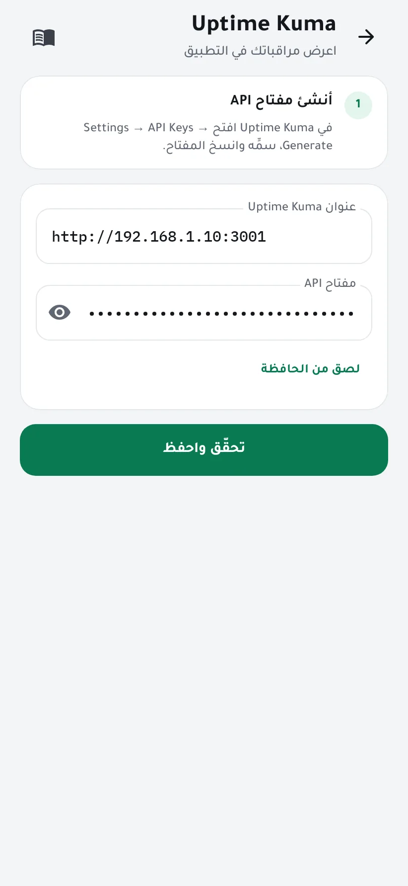
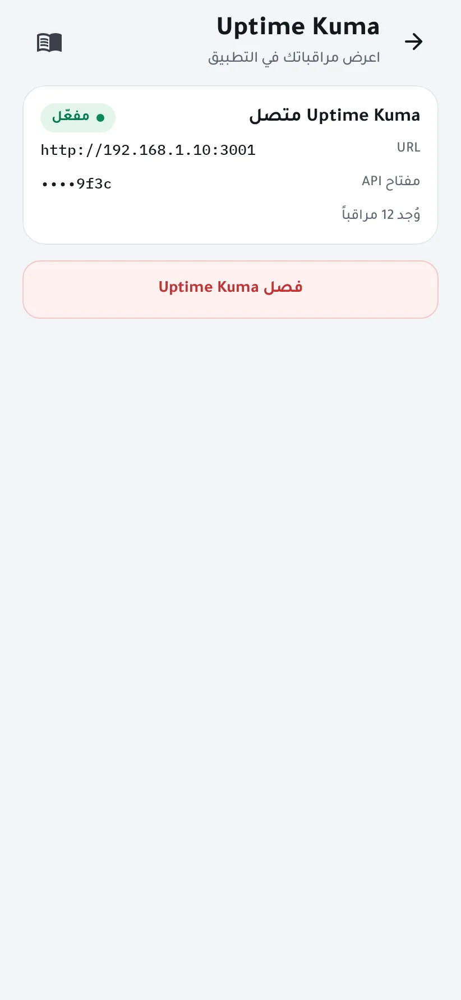
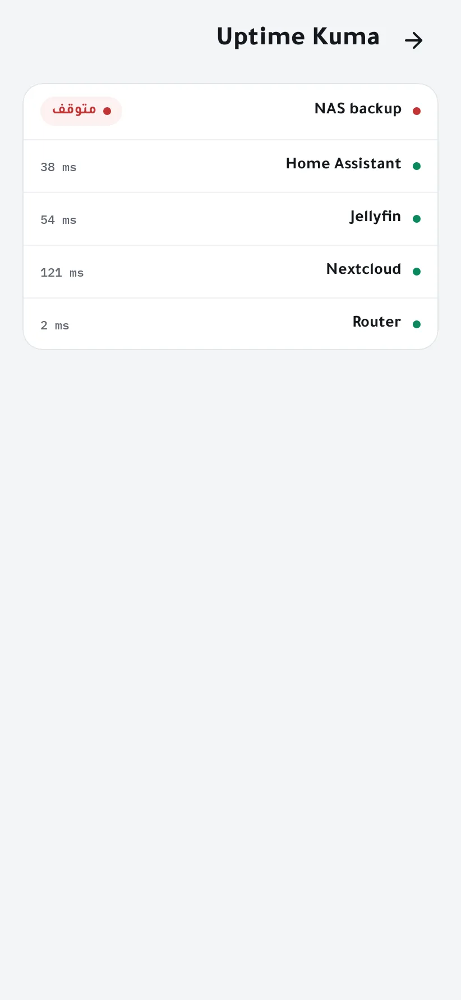

اعرض مراقبات Uptime Kuma
إن كنت تستخدم Uptime Kuma فيمكن لـ Homelab Pulse عرض مراقباتك بجانب حالة سيرفرك. يقرأ الوكيل مقاييس Uptime Kuma بمفتاح API، ويبقى المفتاح على سيرفرك.
تحتاج إلى
- Uptime Kuma بالإصدار 1.21 أو أحدث (الإصدارات التي تدعم مفاتيح API)، يمكن الوصول إليه من سيرفرك.
- هاتف بصلاحية مسؤول في Homelab Pulse.
-
أنشئ مفتاح API في Uptime Kuma
افتح في Uptime Kuma المسار Settings → API Keys → Generate. سمِّ المفتاح، مثل «Homelab Pulse»، واختر هل تنتهي صلاحيته، ثم انسخه: يبدأ بـ
uk1_. -
اربطه في التطبيق
افتح الإعدادات ← Uptime Kuma. اكتب عنوان Uptime Kuma كما يصل إليه سيرفرك، مثل
http://192.168.1.10:3001، أوhttp://127.0.0.1:3001إن كانا يعملان على الجهاز نفسه. الصق المفتاح واضغط تحقّق واحفظ.
-
انتهى
يعرض المعالج عدد المراقبات التي وجدها. يُخزَّن المفتاح مشفّراً على سيرفرك ولا يمكن قراءته مرة أخرى.

-
شاهد مراقباتك
اضغط بطاقة Uptime Kuma في الشاشة الرئيسية لترى حالة كل مراقب.

إن واجهتك مشكلة
- العنوان لا يمكن الوصول إليه
- يتصل الوكيل من سيرفرك لا من هاتفك: استخدم عنواناً يعمل على السيرفر.
- المفتاح مرفوض
- ربما انتهت صلاحيته أو حُذف. أنشئ مفتاحاً جديداً في Uptime Kuma.